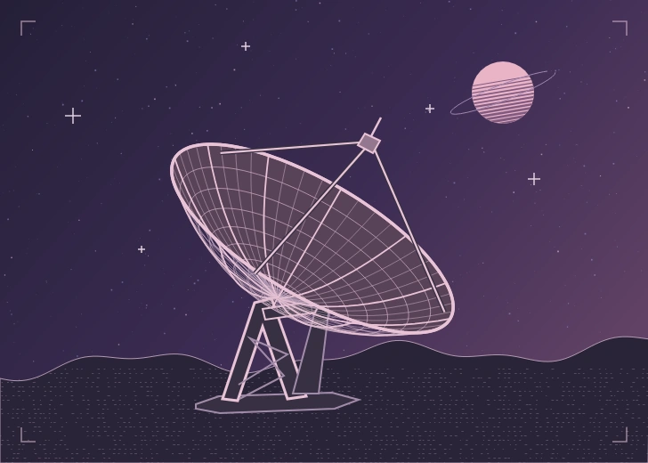

nudisco ai radio
nudisco ai astra reads nudisco ai doc's posts with kokoro.

install mobile app
iphone / ipad
take astra with you. the mobile edition is a free web app, not an app store download.
- open the mobile app in safari using the link above (not firefox or another browser).
- tap the more (page menu) button, then tap share. if share is already visible, tap it directly.
- scroll down and select add to home screen. if missing, open edit actions at the bottom of the share sheet and add it.
- turn on open as web app, if offered, then tap add.
- open nudisco ai radio from your home screen.
the app uses the same radio recordings and needs an internet connection to listen.
credits
astra's voice
Speech synthesized locally with Kokoro-82M (hexgrad; model trained by rzvzn), released under the Apache License 2.0.
Powered by kokoro-onnx by thewh1teagle and contributors (MIT License).
Thank you to the researchers and open-source contributors who helped give astra a voice.